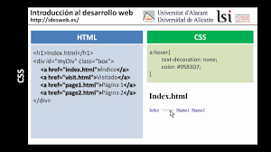

Proposito de esta página web es que los estudiantes puedan encontrar información
sobre como es la sintaxis y la forma como se aplican los selectores CSS en el
diseño de paginas web ,ademas de poder realizar preguntas y tambien contestar e
interactuar con los docentes solucionando problemas y compartiendo experiencias

Selectores básicos
Bibliografía:
Eguiluz, J. (2006-2022). Selectores Básicos. Obtenido de Selectores: https://uniwebsidad.com/libros/css
Selectores avanzados
Eguiluz, J. (2006-2022). Selectores Avanzados. Obtenido de Selectores: https://uniwebsidad.com/libros/css/capitulo-2/selectores-avanzados